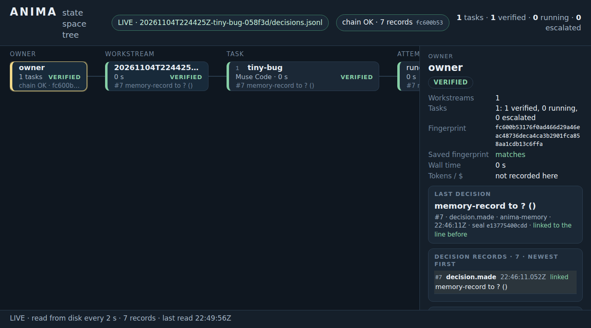

A prototype for one job type
ANIMA — memory for coding work
ANIMA sits next to the coding agent you already use. It remembers earlier fixes, hands every answer to a checker the agent cannot see, and shows the work on one screen. It is a prototype, validated on one job type: fix a bug, judged by hidden tests.
The three-minute proof
Three things you can check
1. Nine recorded jobs, judged by a hidden checker
We gave ANIMA nine real bug-fixing jobs from well-known open-source Python libraries. A Muse Code worker did the work, the hidden checker judged each answer, and every decision went into a sealed record. Where the checker caught a wrong “done”, the next helper up the ladder fixed it. Replay the nine-job run or read the run and its limits.
2. A state tree you can read

3. A memory that shows its work
ANIMA’s memory is TRACE: search that shows its work. In our sealed test library (812,545 passages, 99,891,846 tokens), TRACE kept 99.85% of exact search’s results while scoring 0.79% of the passages. Every answer comes with a checkable record of where it came from.
50 test searches; one of four equal library parts; passage-scoring work only.
Our own measurements; no outside party has verified them. The TRACE numbers and their limits · TRACE explorer
Honest limits
- What was validated is one kind of job: fix a bug, judged by hidden tests. Every other feature carries the badge on its own page, and that badge comes from one status file.
- Nine jobs in one run is a worked example, not a statistic. The second helper was told the failing line, so that was an informed retry. The libraries are public, so the agents may have seen similar fixes before.
- We make no claim about long runs, or about leaving it alone while you are away. That is untested.
- The record check shows the log was not changed afterwards. It cannot show that the run itself was honest, and it does not re-run the nine jobs.
The deep end
Receipts, reproduce, architecture, research, status, contribute
Receipts
The recorded run: log, decision chain, checker output, and what the record cannot show.
Reproduce
Every claim next to the command that checks it, and what each command needs.
Architecture
The ladder, the hidden checker, the record and the memory, in plain words.
Research notes
Design-phase proposals and open questions. Direction, not results.
Status
What is built, what is a prototype and what is only planned, from one status file.
Contribute
How to run the checks, change the site and report a problem.
Install · Docs index · Demos